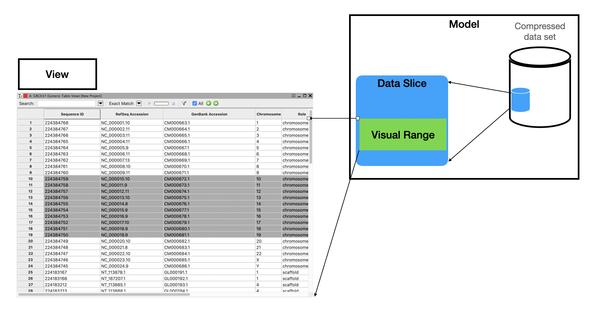
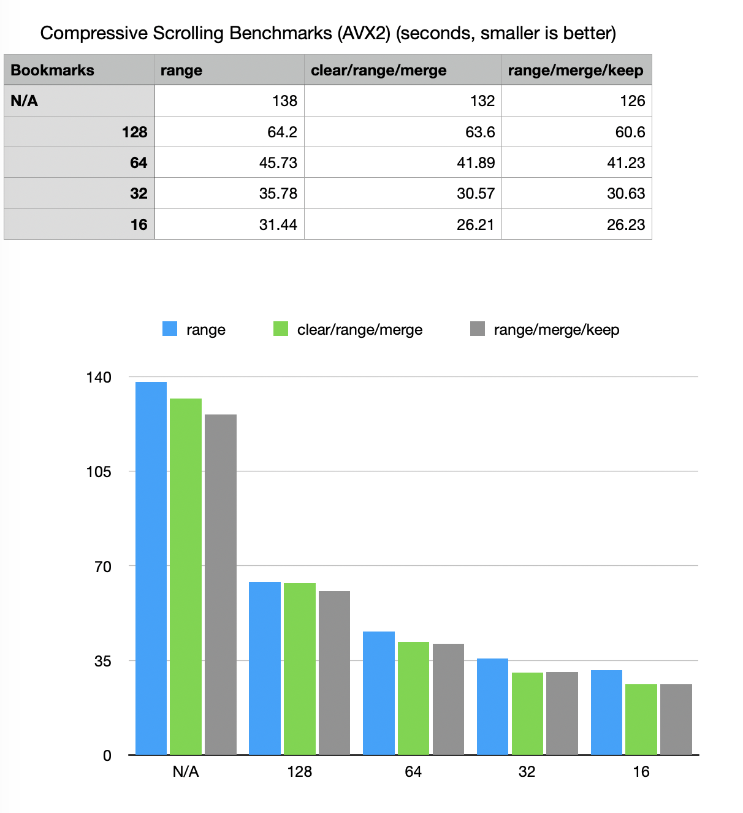
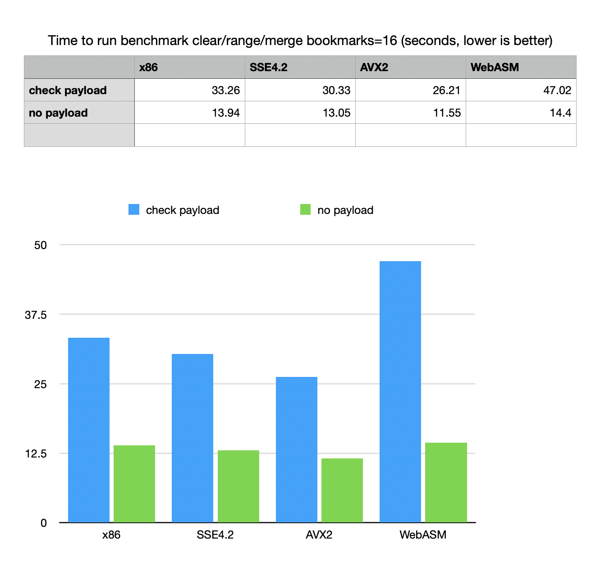

Notes on MVC design using compressed data frames
Anatoliy Kuznetsov. Oct 2020 (based on BM v.7.3.0+)Introduction
The example/use case study to illustrate optimization techniques for range deserialization of compressed vectors. The problem is put in the context of interactive visualization systems working with compressed BitMagic models not fitting into main memory in non-compressed form. It is still possible to keep such models in memory compressed-serialized and only extract a necessary portion (range) of the vectors implementing a scrolling through compressed data. Deserialized data open up into as succinct sparse vectors where the target sparse vector would contain the deserialized data.
Model-View-Controller on large data sets
Model-View-Controller is a common design pattern for UI, popular for design of desktop and Web applications. Model is the data intensive component of this pattern. It receives user input from the Controller and has to provide the data. Response time from the Model is a common bottleneck in data intensive applications as it impacts latency of UI, which generally should be within milliseconds.
It can be especially challanging on the WEB, where Model is backed up with a remote network service.
The specifics of interactive systems is that it is assumed that target decode range is defined by the user which means next decode range may partially overlap with the old one (probability that the operator wants to see a neighboring data exists in many applications related to visual exploratory browsing of large data sets).
Large data set UI applications present two conditions I would like to reiterate upon:
- significant memory pressure on the application
- need for fast response(low latency) after the user input
The proposed design would keep the data set compressed (in RAM) and would only decompress a slice of the data. Vector-columnar data models usually allow slicing in two dimensions: columns and ranges of coordinates. Range decode are often called Gather-Scatter, but today we touch a more specific variant of it when we need to extract a window of vector data.
Screenshot of a grid is from NCBI Genome Workbench
To accommodate user input (Controller) Model would keep an excessive range around what it actually shows on the screen (Visual Range). While user browse in the Sliced range the UI is very responsive, but when the focus shifts, data slice needs to be re-extracted. Assumption is that in many applications the browsing direction is actually not chaotic, but scrolls around (forward or backwards), so the sliding window needs to follow the direction of scrolling.
Old slice and new slice often overlap and this can be exploited to avoid unnecessary decompression work.
Demo application design
xsample10 demo makes a few simplifying assumptions: it always scrolls forward for the 30% of decode window. The demo app does not illustrate the backward scrolling with overlap or random scrolling to keep the general idea succinct.
The test example creates a simulated data frame of 3 sparse vectors (2 string vectors and one vector of unsigned ints), using generated dense pseudo-bioinformatics dataset, somewhat resembling bioinformatics GFF/VCF columnar formats with 25000000 records.
Vector serialization for range extraction
A few notes vector serialization setup:
- Serialization code uses XOR compression for each serialized vector, but does not use XOR between vectors in the whole data-frame. Cross vector XOR compression could improve compression ratio, but it would require us to always deserialize all the vectors, because they would all become part of compression scheme and depend on each other. It is not always convenient and it is not the case point of this demo.
-
Serialization is configured to use bookmarks.
Bookmarks are useful when we plan to deserialize random vector ranges and this is
exactly what we want to do here. Bookmarks somewhat increase the sizes of BLOBs
but this increase is very insignificant.
sv_serializer_u32.set_bookmarks(true, 32)can be used to enable bookmarks and set them at approximately 32 blocks (65536 vector elements). This is not very precise, but provides a balance between speed of range decode and extra size it adds to the compressed vector.
Code example:
bm::sparse_vector_serializer<str_sv64_type> sv_serializer;
bm::sparse_vector_serializer<sparse_vector_u32> sv_serializer_u32;
// configure with bookmarks for fast range deserialization
//
sv_serializer.set_bookmarks(true, 32);
sv_serializer.enable_xor_compression();
sv_serializer_u32.set_bookmarks(true, 32);
sv_serializer_u32.enable_xor_compression();
BitMagic vectors are designed as sparse (it works well for dense cases as well), so they allow range extraction with preservation of the coordinate space (which is very convenient). If we have a serialized vector of { 1, 10, 20, 21, .. } we can request a range of [1..2] and get a vector { 0, 10, 20, 0, .. }, range deserialization is not a database cursor (as it may be misuderstood) because it restores elements of the vector in the original coordinates. Combined with extract functions it can be made into a cursor (but why?).
Range decode algorithms
xsample10 implements benchmarks using overlapping forward scrolling using 3 methods:
-
“Range” bm::sparse_vector_deserializer<>::deserialize_range()
The overlap with the old range is just ignored. New data slice is just restored as new from
serialized BLOB. (see scroll_benchmark_range() method)
void scroll_benchmark_range( const compressed_data_frame& df_cz, unsigned size, const data_frame& df, bm::sparse_vector_deserializer<str_sv64_type>& sv_deserial_str, bm::sparse_vector_deserializer<sparse_vector_u32>& sv_deserial_u32) { data_frame df_r; // range data frame (partial) unsigned cnt = 0; for (unsigned i = 0; i < size; i+=page_size/3, ++cnt) { unsigned from(i), to(i+page_size-1); // define range variables // deserialize range for each vector in the data frame // sv_deserial_str.deserialize_range(df_r.id, (const unsigned char*)df_cz.id_buf.data(), from, to); sv_deserial_str.deserialize_range(df_r.seq, (const unsigned char*)df_cz.seq_buf.data(), from, to); sv_deserial_u32.deserialize_range(df_r.pos, (const unsigned char*)df_cz.pos_buf.data(), from, to); // as a payload to simulate real work // use test comparison with the orginal data frame // if (is_check) check_range(df_r, df, from, to); } // for } -
“Clear/Range/Merge” This method is overlap aware, it implements an
algorithm which uses “clear_range()” of sparse vectors to free
the non-overlapping part of the old data slice. Then it restores a
non-overlapping part of new range (forward looking data slice) using a
temporary vector variables. At this point we have two data frame slices
(old slice cleared and new slice incremental).
“merge()” combines the vectors together. Temporary variable is not longer valid because
merge is a data move operation so temp is just destroyed.
(scroll_benchmark_clear_range_merge())
void scroll_benchmark_clear_range_merge(const compressed_data_frame& df_cz, unsigned size, const data_frame& df, bm::sparse_vector_deserializer<str_sv64_type>& sv_deserial_str, bm::sparse_vector_deserializer<sparse_vector_u32>& sv_deserial_u32) { data_frame df_r; unsigned from(0), to(0); unsigned i = 0; for (; i < size; i+=page_size/3) { { data_frame df_tmp; // clear the range evicted out of the scrolling window if (i) { df_r.id.clear_range(from, i-1); df_r.seq.clear_range(from, i-1); df_r.pos.clear_range(from, i-1); } auto prev_to = i ? to+1 : 0; from = i; to = i+page_size-1; assert(from < prev_to || !i); // deserialize into a temp (empty) dataframe sv_deserial_str.deserialize_range(df_tmp.id, (const unsigned char*)df_cz.id_buf.data(), prev_to, to); sv_deserial_str.deserialize_range(df_tmp.seq, (const unsigned char*)df_cz.seq_buf.data(), prev_to, to); sv_deserial_u32.deserialize_range(df_tmp.pos, (const unsigned char*)df_cz.pos_buf.data(), prev_to, to); // merge temp dataframe into the target dataframe df_r.id.merge(df_tmp.id); df_r.seq.merge(df_tmp.seq); df_r.pos.merge(df_tmp.pos); } if (is_check) check_range(df_r, df, from, to); } // for } -
“Range/Merge/Keep”
This is a simpler variant of 2, where instead of explicit “clear_range()” we use its functional counterpart “keep_range()”
keeping all the data outside the range. (scroll_benchmark_merge_keep_range())
void scroll_benchmark_merge_keep_range(const compressed_data_frame& df_cz, unsigned size, const data_frame& df, bm::sparse_vector_deserializer<str_sv64_type>& sv_deserial_str, bm::sparse_vector_deserializer<sparse_vector_u32>& sv_deserial_u32) { data_frame df_r; unsigned from(0), to(0); unsigned i = 0; for (; i < size; i+=page_size/3) { data_frame df_tmp; auto prev_to = i ? to+1 : 0; from = i; to = i+page_size-1; assert(from < prev_to || !i); // deserialize into a temp (empty) dataframe sv_deserial_str.deserialize_range(df_tmp.id, (const unsigned char*)df_cz.id_buf.data(), prev_to, to); df_r.id.merge(df_tmp.id); df_r.id.keep_range(from, to); sv_deserial_str.deserialize_range(df_tmp.seq, (const unsigned char*)df_cz.seq_buf.data(), prev_to, to); df_r.seq.merge(df_tmp.seq); df_r.seq.keep_range(from, to); sv_deserial_u32.deserialize_range(df_tmp.pos, (const unsigned char*)df_cz.pos_buf.data(), prev_to, to); df_r.pos.merge(df_tmp.pos); df_r.pos.keep_range(from, to); if (is_check) check_range(df_r, df, from, to); // check the range } // for }
xsample10 can be configured to run pure scrolling or run a payload simulation on each deserialized range, comparing the range to the original vectors with iterators. Having a payload is important for practical benchmarking (vs. micro-benchmarking) Real-life application will necessarily have some failry complex logic with scrolling loop.
Benchmark results
Using 3.2GHz Quad-Core Intel i5
Effects of bookmarking and scrolling algorithms
Use of serialization bookmarks significantly improves performance of “bm::sparse_vector_deserializer<>::deserailize_range() (at a cost of fractions of percent in size of the vector.
Bookmark parameter helps a lot but the performance curve starts flattening after “32”, yet at “16” it still shows measurable improvement in all 3 benchmark methods.
Overlap aware methods with “merge()” can add an extra 15% percent of performance improvement (important for low-latency apps).
Platform builds
Platform tests for SIMD: tests positively respond to SSE4.2 / AVX2.
Notes on WebAssembly
WebAsm test show an interesting phenomenon. WebAsm payload function based
on iterators makes it quite slow, despite the fact that decompression
algorithm runs almost at native speed. It was noticed before that a
combination of Emscripten / WASM produces with exceptions and use of complex
iterators with a FSM (Finite State Machine) logic produces somewhat slower code.
More C-centic approach is possible since all BitMagic containers provide
low level C-style decode functions, working faster than const_iterator.
Other suggestions (parallelism)
All data frame vectors are independent entities (the example does not use XOR compression between different vectors), so this example can be easily reformulated to use threads to do range manipulation in parallel.
MVC for distributed systems
The same MVC design can be adapted for distributed systems where compressed data set is a remote and kept under a (micro-)service. In this case we would need to do slicing and re-serialization in remote service. In this situation the use of overlap aware methods 2 and 3 become very important, as it significantly reduces network traffic by sending only a non-overlapping increment.
For Web applications MVC pattern with compressed model can be implemented using WebAssembly.
GitHub
Sources are available: xsample10